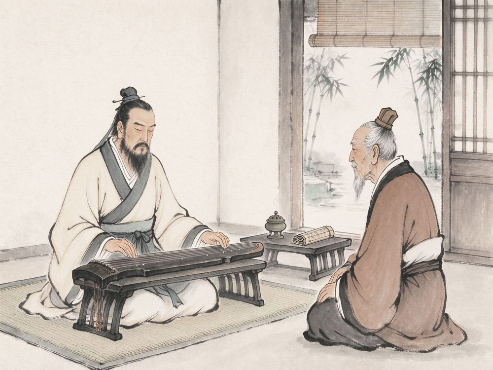

第 四 课
教之道，贵以专。
jiào zhī dào guì yǐ zhuān
① 先读右列
jiào
教
十一画
zhī
之
三画
dào
道
十二画
② 再读左列
guì
贵
九画
yǐ
以
四画
zhuān
专
四画
先 ↓ 右列 再 ← 左列
古法竖排：自右而左，自上而下。先读右列「教之道」，再读左列「贵以专」，每列从上往下。
道是路、是方法 · 贵是以…为贵 · 专是一件事走到底
少儿共读读给孩子听
上一课说，没人教会滑下去。这一课说，教，还得顺着一条路、只走一条路。
孔子年轻时学琴，老师是师襄子。
一首曲子，他练了十天，没有换下一首。师襄子说：可以学新的了。孔子说：我曲子是会弹了，可它的节奏我还没摸透。
又练了一些日子，师襄子说：节奏也抓住了，可以往下学了。孔子说：还没有，我还没懂这首曲子里的人心里在想什么。
再练。练到有一天，他手在琴上，忽然沉默下来，像看见一个人站在他面前；抬头远望，神情安然。他说：我看见了，写这首曲子的是个什么样的人，我知道了。

这就是“专”：不是练得多，是一件事没到底，不换下一件。
荀子讲过一个反面的例子。有一种小兽，会五样本事：能飞，飞不过屋顶；能爬，爬不到树梢；能游，渡不过河沟；能打洞，洞藏不住身子；能跑，跑不过人。五样都会一点，五样都不成。
写字也是这样。一个字写一遍就换下一个，写出来都不像；写一个字，写到手腕知道它该怎么拐、怎么收，才叫会写。

所以“专”有两层：一是一次只做一件；二是一件做到能自己来，再换下一件。
专一 条 路 走 到 底
一首曲子练到懂、一个字写到熟、一件事做到能自己做。慢一点，但走到底，手上就长出真东西。
杂样 样 会 一 点
这个摸三天，那个碰两天。每样都在门口打转，看着热闹，一件也拿不出手。
成 长 小 启 示
- 一次只开一件事。写字时不听故事，听故事时不写字。
- 练到能自己讲出来、自己弹一遍，才算过了一关，再换下一个。
- 不贪多。会五样都差一点，不如一样拿得出手。
- 专不是死磕。练到烦了，歇一会儿，再回来守这一件事。
给 爸 爸 妈 妈 的 一 句 话 · 专 的 三 招
“贵以专”不是让孩子只学一样，是让他一次只走一条路。三招最实用。
一、同一时段只开一个。这学期要练的，只挑一件事。琴、棋、画、字都在，孩子就都在门口。
二、用“能自己来”当过关线。能自己弹完一整首、写出一整页不用你在旁边盯，才算过。过了再添新的。
三、别用“坚持”压他，用“再走一步”。孩子卡住时，不说“你要坚持”，说“我们再走一步看看”。专是走到底，不是硬扛。
— 8 —